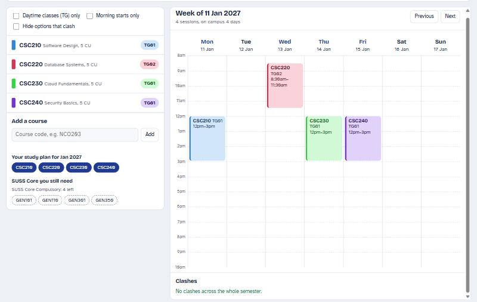

SUSS Timetable Planner: no more clashes
Course registration gives you a 300+ page PDF. I built a web app that reads it for you, checks every real session date for clashes, and suggests timetables that work.

The problem
Checking a timetable by hand is slow and easy to get wrong, because the weekly slot isn't the whole story:
- Classes alternate between 2-hour and 3-hour weeks.
- There are one-off sessions and written exams on their own dates.
- Some courses have overseas trips during the break, which can clash with special-semester classes.
- Some courses span two semesters.
I wanted to compare a few backup timetables side by side before registration opened, and be sure none of them clashed on any date.
What I built
- Reads the official PDFs (course schedule, curriculum plan, study plan, overseas info sheet) and recognises each one automatically.
- Checks clashes on every date, including exams and trip days, shown on a weekly calendar and a week-by-week strip.
- Suggests timetables with options like daytime classes only, morning starts only, or keeping certain weekdays free, ranked by fewest campus days.
- Compares backup plans in one table: clashes, campus days, credit units and trips.
- Tracks progress: which SUSS Core courses you still need, prerequisite warnings, and courses running for the last time.
- Exports a plan to your calendar (.ics) and backs up all plans (.json).
How it works
Reading tables from a PDF
A PDF has no real "table", just text placed at coordinates. The parser groups text into rows by vertical position, then matches the course code, class group, date, times and campus. Wrapped text like "WRITTEN EXAM" is attached to the nearest row.
Finding columns from the header
For the curriculum plan, the parser finds each column's position from the header rows, so cells that wrap over several lines (course names, prerequisites, remarks) end up in the right column.
Searching for clash-free timetables
The suggestion engine is a depth-first search with pruning. It places one class group at a time and abandons a branch as soon as a group clashes with what's already placed, so it never wastes time on combinations that can't work.
Checking clashes by date, not weekday
Each check uses a per-date map of occupied times plus blocked trip days. That's what catches an exam or a one-off session that a weekly view would miss.
Key decisions
Parse the PDFs in the browser instead of on a server.
Students' documents never leave their device, there's no server to run or pay for, and the whole app can be hosted for free on GitHub Pages.
Ship sample data and no SUSS documents in the repository.
Anyone can try the app in one click, while the official PDFs stay with SUSS. Users upload their own copies.
Test against the real SUSS timetable.
Edge cases like alternating session lengths and trips clashing with special-semester classes only show up in real data, so I checked the results against the actual schedule.
What I'd do next
- Parser testsAutomated tests on sample PDFs so a format change is caught straight away.
- Share a planSend a plan to a friend with a link, to line up classes together.
- User feedbackShare it with coursemates during registration and see where they get stuck.
Try it yourself
Click "Try with sample data". No PDFs needed.